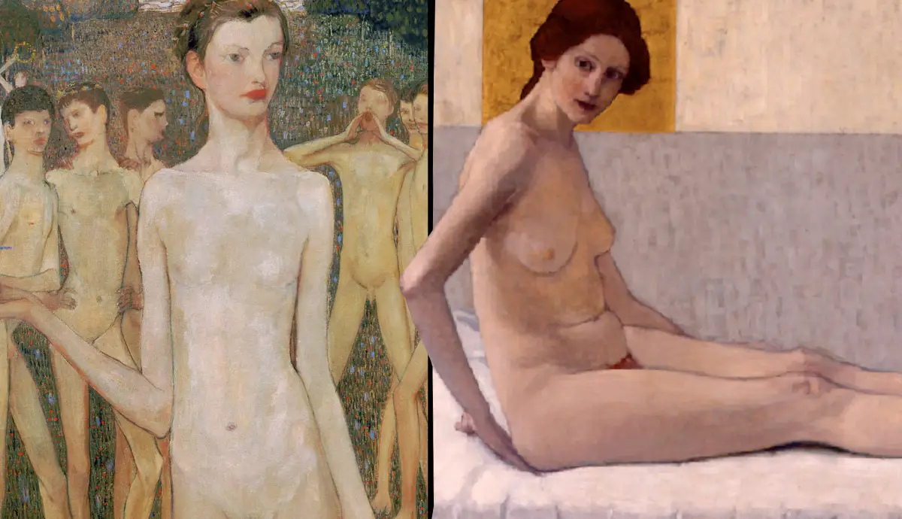
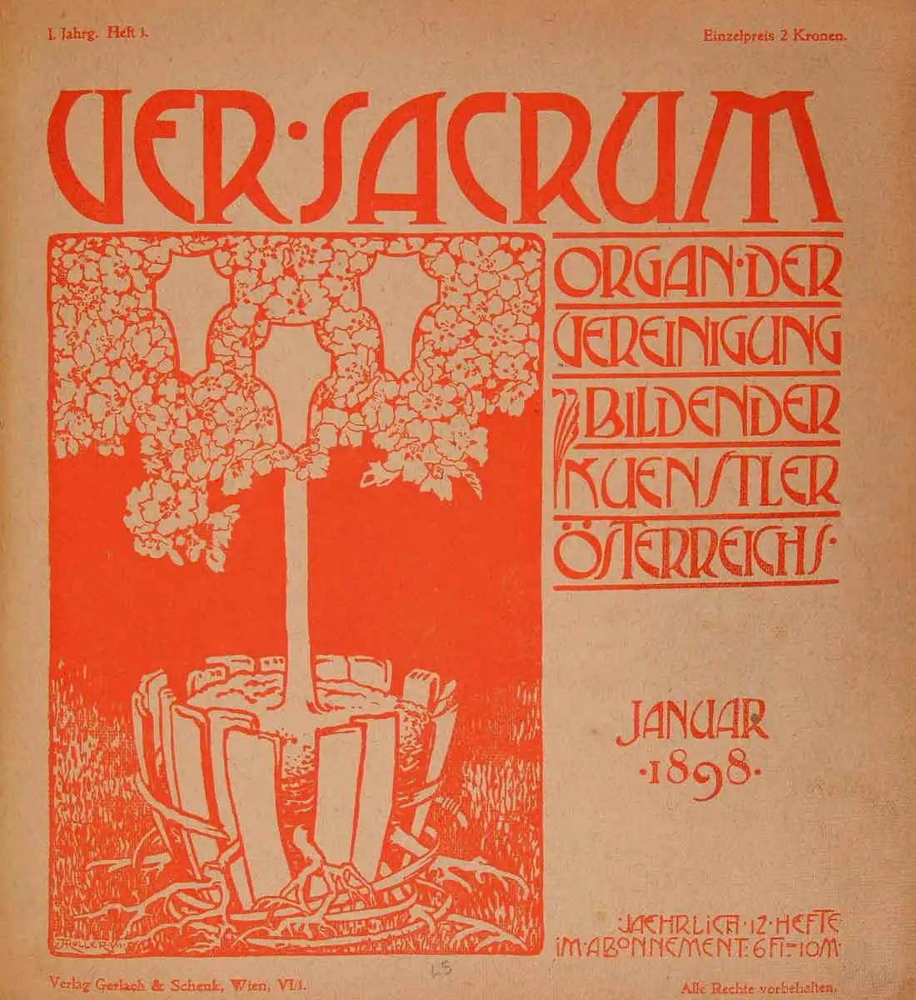
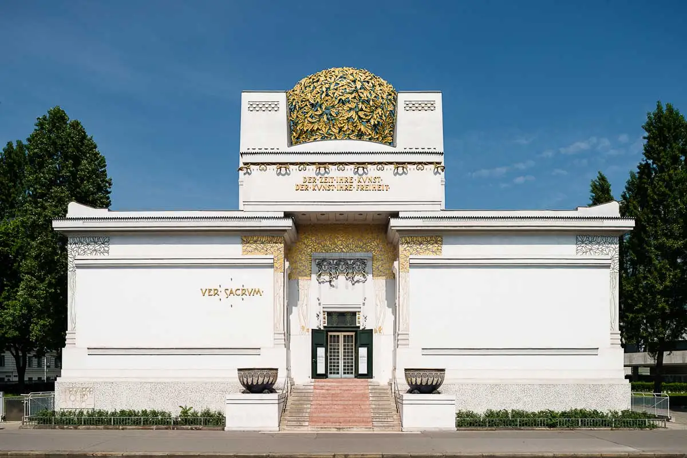
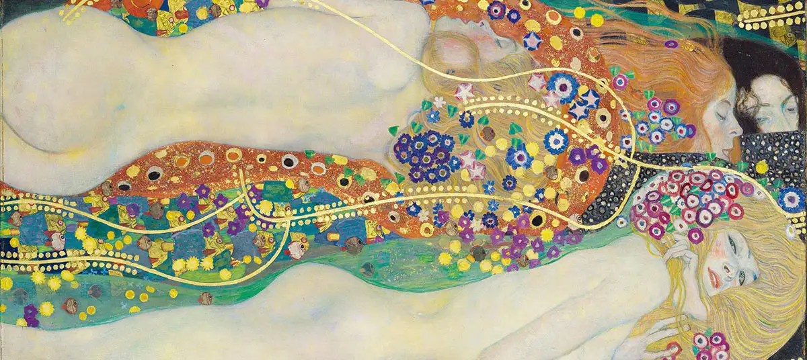
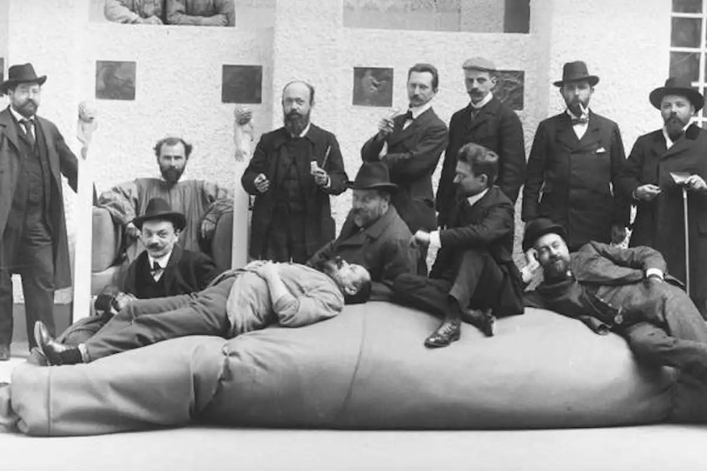
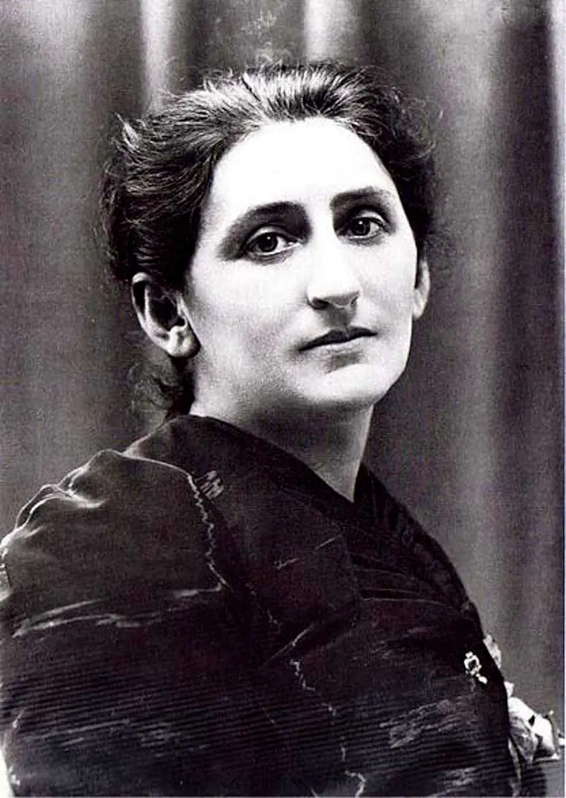

Meet the three Women artists of the Vienna Secession
Apart from the well-known male artists of the Vienna Secession, this artist collective also collaborated with a number of women artists. Discover who they were and what art they created.

The Vienna Secession, which was founded in 1897, was the name of a group of male artists that wanted to break free from the classical and historical art that was then still the norm. Their aim was to experiment with new shapes, subjects, techniques and sizes, to ultimately bring about a whole new type of art. Some of the Secession’s members grew out to be very famous artists. Think about Gustav Klimt, Otto Wagner and Koloman Moser. However, apart from the famous male artists, the Secession group in fact also collaborated with various women artists. These women were equally active in their time as Klimt, for example, and surely successful as well. This article will explore who these women were, and what art they created.
Women’s Right During the Vienna Secession Period

Before introducing the female artists that worked together with and exhibited with the Vienna Secession, this paragraph will elaborate on the social climate in Vienna, as well as that within the Secession group. This way, it can become clear why it was possible for women to become a part of this movement.
At the end of the nineteenth and beginning of the twentieth century, there were many discussions around the topic of ‘identity’. This was also particularly true to Vienna. As a result of the high levels of immigration that Vienna dealt with at the time, different social and ethnical groups merged, and the environment was challenged by the influx of new ideas. One of the biggest identity questions that this process initiated, was that of the position of women. It even received a name of its own: ‘die Frauenfrage’, or ‘the woman question’ in English.
As in many places at the time, women’s emancipation was also opposed by some in Vienna. Still, the last half of the nineteenth century, as well as the early twentieth century certainly saw some important changes for women. After the erection of a national women’s rights organisation in 1866, 1897 saw the foundation of the Verein Kunstschüle für Frauen und Mädchen in 1897. This was an art school for girls and woman in Vienna, which, for the first time in history, allowed them to receive a professional training in art or commercial design.

When it comes to the Secession, what should be mentioned first is that many of its members consisted of artists who had left the official Künstlergenossenschaft. The latter was an Austrian art society that supported the creation of classical and historical art. As was mentioned before, the members of The Vienna Secession wanted to break free from exactly that type of art. Moreover, apart from breaking with what they considered outdated styles, the artists also broke with some outdated social norms. Among these was the notion that woman wouldn’t be allowed to form a part of an artist movement. However, as you might have noticed, I have not yet spoken of female members of the Vienna Secession, and there is an important reason for this. Because even though many artists from the Secession group were very progressive, women artists were not yet allowed to become official members. The reason for this laid outside of the Secession group, as the country’s law didn’t permit the official merging of men and women yet.

However, the Secession did collaborate with women, and allowed them to exhibit together with their male members at the Viennese Secession Building. Besides the exhibitions, it was also a woman, Berta Zuckerkandl, who wrote important sections of the Secession’s magazine, called Ver Sacrum. Zuckerkandl later also overlooked the Secession’s international relations. The male members of the Secession seemed to have been open to women, but were also limited by what the times allowed. Interesting to mention is that Klimt’s muse and life partner, Emily Flöge, was an independent fashion designer. Something that might reveal how Klimt thought about a women’s position within society. Moreover, in 1912, Klimt went on to erect a new artist movement, which allowed women artists to become official members.
The exclusion of the women Secession artists from Art History

While there were multiple women artists who collaborated with the Vienna Secession, they have long been left out of art historical narratives about this movement. Even though they weren’t official members, the fact that they worked together so closely to the Secession artists should have been enough to write about them. However, in relation to these woman artists, it is important to note that in art historical writing, the Secession’s style is often defined by the portrayal of women by Gustav Klimt. In other words, art historians seemed to have considered Klimt’s works, and in particular his woman portraits, as the definition of Secession art, thereby excluding art that did not fit into that image. It’s not strange that Klimt, as the president of the movement, was put at the forefront of narratives about the Secession. Yet, the exclusion or underexposure of other members, among which both males and female artists of the Secession, seems to have been a subjective decision.

The idea that the Secession was defined by just Klimt’s paintings of women, also creates an incomplete image of the Vienna Secession in general. Rather than for Klimt’s paintings of women alone, the Secession’s known for the wide variety of disciplines that the artists worked in. Examples of some of the male members of the Secession are the architects and designers Joseph Olbrich, Otto Wagner and Josef Hoffmann, the painter Gustav Klimt, the printmaker and designer of applied arts Koloman Moser, and the painter and print maker Max Kurzweil. Below you see a photograph of the Secession members. One of the reasons why the Secession existed of so many different types of artists, was that they believed in the union of all art into one big artwork, called a Gesamtskunstwerk. In English, this term would translate into ‘a total work of art’. To say that Klimt was the Secession, undermined even Klimt’s own mission.
In the next paragraphs, we’ll address three female artists who collaborated with the Vienna Secession, as well as the type of art they made. This way, we can discover what art also defined the oeuvre of the Secession movement.
Broncia Koller and the Vienna Secession

Read the full article on www.thecollector.com and discover the women Secession artists and their art.